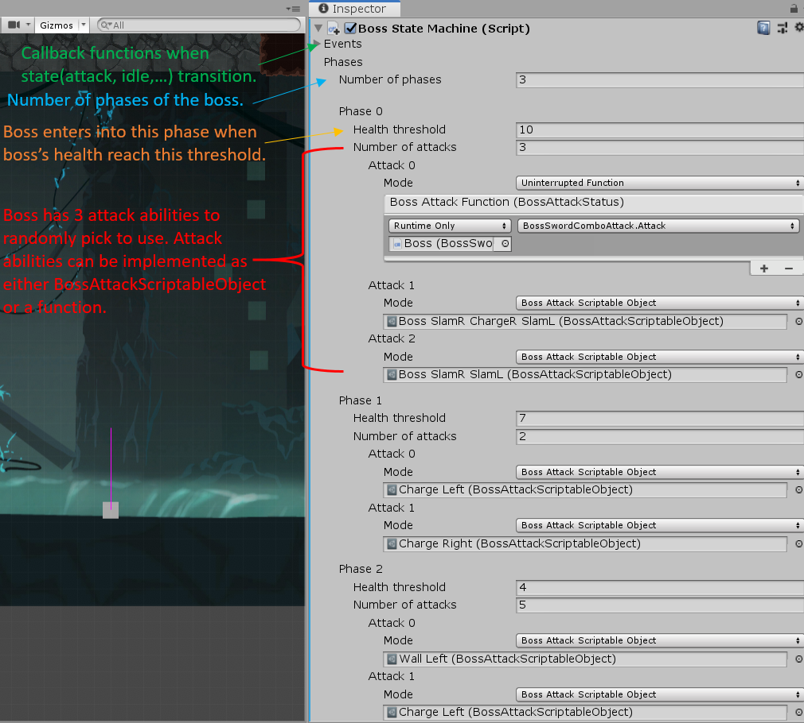
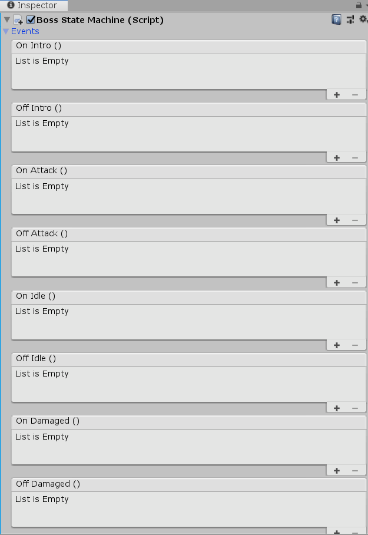

Io

ABOUT
Io is a single-player 2D action platformer game featuring challenging combat, difficult platforming and a final boss.
Player has to fight their way down to the bottom of the dark abyss to discover the source of the problem that is plaguing the village.
A long term project completed over a semester by around 90 University of Michigan students.
DEVELOPMENT INFO
-
Developed by WolverineSoft Studio
-
3 month development cycle (02/04/2020 - 5/04/2020)
-
90 developers
-
Made using Unity Engine
CONTRIBUTIONS
CONTRIBUTIONS

My major contribution to this project was the design amd implementaiton of the Boss Behaviour System.
The system not only has a finite state machine that controls the states(attack, idle, hurt,...) of the boss
and allows other developers to add callback functions, but it also has a phase system that
allow designers to easily implement bosses' phase transition(ex: normal -> angry -> furious), and
attack abilities patterm through a customized Unity Inspector and Scene Editor without touching code.
The boss system was initially divided into 3 parts,
the Behaviour System, which controlled the behavior of the boss, the BossAttackScriptableObject, which stored the
properties of the attack, such as the animations, and coordinates for the projectiles, and the Projectile prefab,
which was the individual projectiles that would be instantiated by the BossAttackScriptableObject, which was in
turn called on by the Behaviour System.

The design and implementation of the Boss Behaviour System at the early stage of the development
only included the finite state machine. However, as the bosses' design progressed, the design team wanted
bosses to have multiple phases(ex: normal -> angry -> furious), and when a boss get hurt to a certain threshold,
it will enter into next phase with a more aggressive, outrageous attack patterm.
This means the system was no longer enough to meet design team's need.
After some discussion, I restructure the behaviour system so that the boss behaviour system becomes
a combination of finite state machine and phase editor, allowing designers to easily implement or adjust a boss' behaviour.
Also, when implementing boss' attack abilities, there are some attack abilities that are tricky
to be implemented using BossAttackScriptableObject, so later on I adjust the behavior system to
also support attack abilities that are implemented as a function.